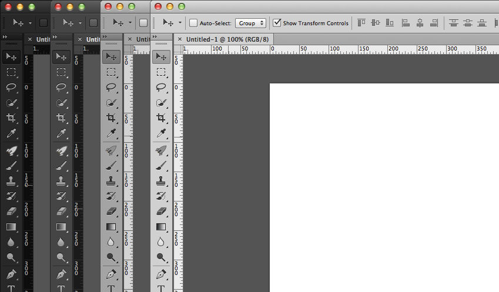
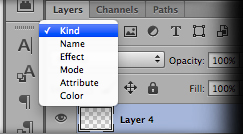
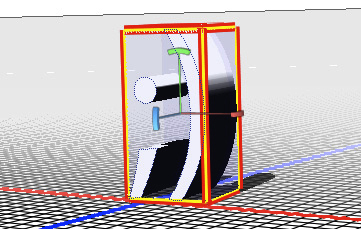

Interfaz:
Photoshop CS6 destaca por su nueva interfaz, que se homogeniza con las de su suite audiovisual (Premiere, Affter Effects,…). Se puede escoger entre cuatro tonos de oscuro a claro y adaptar el software a nuestras condiciones lumínicas. ¡Adiós a la vista cansada! Ni qué decir tiene, que la nueva interfaz luce estupenda; con unos nuevos iconos, también rediseñados.

Mejoras en el flujo de trabajo:
Quizás donde más destaca el próximo Photoshop es en estas pequeñas mejoras que hacen la vida más fácil a sus usuarios. Gracias Adobe, te ha costado.
Rellenado y corrección según el contenido
Quite fácilmente elementos de imagen y sustitúyalos por contenido que se integre perfectamente en su entorno. Consulte "Relleno de una selección con un motivo o imagen" en la página 331 y "Retoque con la herramienta Pincel corrector puntual" en la página 160.
HDR Pro
Aplique mayor potencia de asignación de tonos y cree imágenes de alto rango dinámico que abarquen de fotorrealistas a surrealistas. O bien, aplique un aspecto HDR a imágenes estándar con el ajuste Tonos HDR. Consulte "Combinación de imágenes para HDR" en la página 72 y "Ajuste de los tonos HDR" en la página 132.
Efectos de pintura extraordinarios
Aproveche los efectos de pintura realista: mezcle colores en el lienzo y simule cerdas para producir resultados que compitan con los soportes de pintura tradicionales. Consulte "Pintura con el pincel Mezclador" en la página 300 y "Opciones de forma de punta de cerda" en la página 312.
Deformación de posición libre
Transforme radicalmente determinadas áreas de imagen, mientras que ancla otras en su lugar. Consulte "Deformació de posición libre" en la página 182.
Corrección de lente automatizada
Corrija rápidamente la distorsión mediante perfiles instalados de lentes conocidas o perfiles personalizados de otros modelos. Consulte "Corrección de la distorsión de la lente y ajuste de la perspectiva" en la página 166
Extrusión sencilla con Repujado 3D
Convierta texto e ilustraciones 2D en objetos 3D y, a continuación, extruda e infle sus superficies. Consulte "Creación de repujado 3D (Photoshop Extended)" en la página 561
Rendimiento, flujo de trabajo y materiales 3D mejorados

Optimice rápidamente el rendimiento con preferencias de 3D especializadas. Obtenga interpretaciones y previsualizaciones de forma más rápida con el motor mejorado de Trazador de rayos de Adobe. Aplique materiales de forma interactiva con las herramientas de arrastre y carga de materiales. Consulte "Descripción general del panel 3D (Photoshop Extended)" en la página 544 y "Ajustes de materiales 3D (Photoshop Extended)" en la página 548.
Revisiones creativas simplificadas
Colabore con compañeros y obtenga rápidamente los comentarios del cliente con CS Review, un servicio en línea que acelera el proceso de revisión. Consulte CS Review.